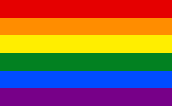

El movimiento LGBT o movimiento LGTB es el movimiento social que lucha contra la discriminación y en favor de la normalización y reconocimiento de derechos de las personas lesbianas, gays, bisexuales, transgénero y transexuales. En los últimos años, el movimiento ha incluido también otros colectivos relacionados con la diversidad de orientaciones, identidades, características sexuales y prácticas sexuales diversas, como las personas intersexuales, transexuales, travestis, queers, BDSM o kink, swinger, leather, asexuales, osos, poliamorosas, practicantes de la infidelidad unilateral consentida (cuckolding), etc., que llevaron a extender la sigla con letras adicionales (LGBTTTAIQK), agregarle un signo más (LGBT+), o reemplazar la sigla por la palabra «diversidad». o disidencia, de manera que no se incluya al colectivo cisheteronormativo.
